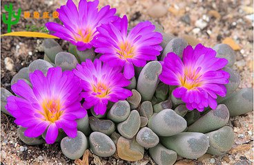
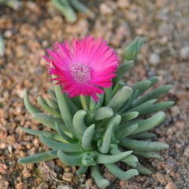

种植养护
繁殖方式
繁殖比较容易，常用的方法为嫁接、扦插、播种、根插、分株、叶插，其中嫁接繁殖在仙人掌科中应用最多。
嫁接繁殖
1. 嫁接应在生长期中进行，最适季节是初夏生长旺季，选温湿及湿度大的晴天嫁接，空气干燥时，宜在清晨操作。
2. 选择砧木与接穗时应选健壮无病的，均不用木质化的太老部分，但太幼嫩的也不适合。
3. 砧木接口的高低，由多种因素来决定，无叶绿素的品种要接的高些，以保证有足够的光和产物供给。
4. 仙人掌类的嫁接操作比较简单，用较薄的刀刃操作。
5. 需2周左右精心管理，接后放阴处，不能日光直射，在完全愈合前也不能使接口处沾水，成活后由砧木生出的侧芽，侧枝均应尽早除去，以免影响接穗的生长。
扦插繁殖
扦插繁殖具有生长快，开花早，保持原有的品种特性，由于其多肉不易枯萎的特点，不仅扦插成活容易，许多种还能用叶插繁殖。
扦插时注意事项：
最好以春节开始生长时扦插，从健康的植株或部位取材，消毒处理，以免切口受感染，选择成熟的植株取材料，刚刚采下的不易立即扦插，应放在干燥通风，温暖和有散射光照射的地方，使伤口产生愈伤组织封闭后再插入基质中。扦插基质应选择通气良好，即保水又具有良好的排水性能的材料，如珍珠岩蛭石等。扦插后应注意控制基质的湿度，少浇水或不浇水。
番杏科、独尾草科、龙舌兰科等品种，由于茎脆弱或无，无法进行扦插繁殖。
不定芽繁殖
落地生根等品种，如：棒叶落地生根、窄叶落地生根、宽叶落地生根、掌上珠、玉吊钟等等景天科伽蓝菜属与落地生根有亲缘关系的多肉植物，以5～6月最好，将健壮叶片平放在沙床上，与沙紧贴，保持湿度。插后1周即能从叶缘齿缺处长出小植株、或将从叶缘齿缺处长出的、已生根的小植株从母叶摘下放置于土上，使其自成一株。
播种繁殖
春天进行播种。播种前种子，用具和基质先杀菌处理。
- 

- 